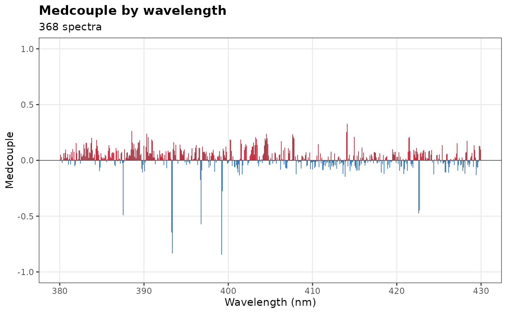
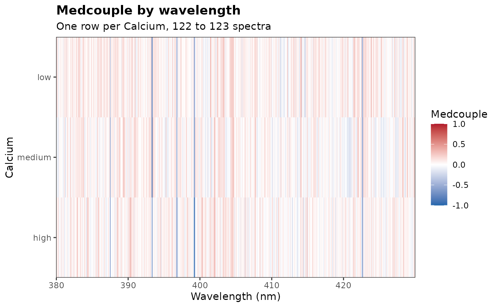
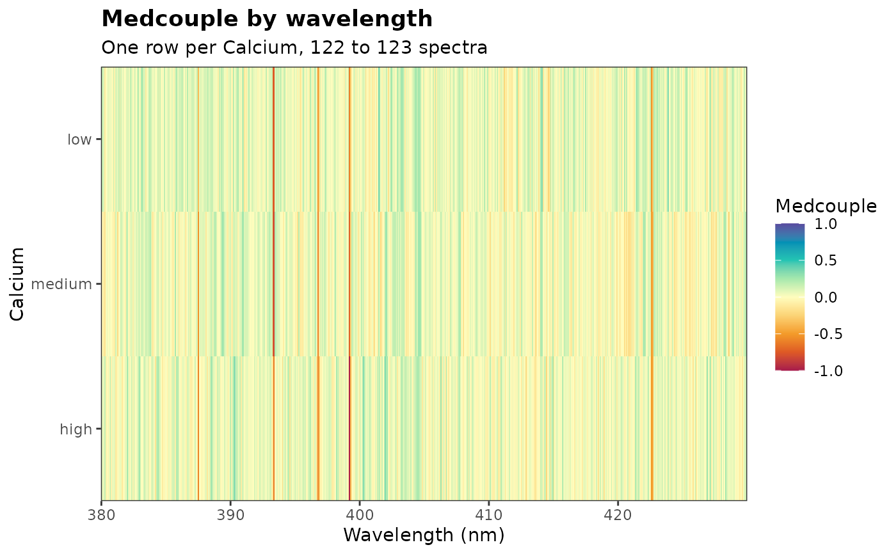

Draws the medcouple (medcouple()), a robust measure of skewness, of
the intensities at each wavelength of a set of spectra: as bars along
the wavelength axis, or with group as a heatmap with one row per group
of spectra, such as the shots of each sample.
Usage
plot_medcouple(
x,
group = NULL,
drop_na = FALSE,
color = c("#2166ac", "#b2182b"),
interactive = FALSE,
title = NULL,
wavelength = NULL,
xlab = NULL,
ylab = NULL,
base_size = 11,
linewidth = 0.3
)Arguments
- x
A data frame, tibble or matrix with one spectrum per row and the spectral columns named by their wavelengths; the other columns are ignored.
- group
An optional column of
x(unquoted or as a string) that splits the spectra into groups, such as the sample of each shot: one row of the heatmap per group. Default isNULL, a single set of spectra.- drop_na
Logical value indicating whether to remove missing values (NA) from the intensities of each channel. If
FALSE(default), a channel with missing values has no medcouple (a gap in the plot).- color
The colors of the scale from -1 to 1: two colors, for the negative and positive medcouples (through white at 0), or three or more spread evenly. The bars use the first and the last. Default is
c("#2166ac", "#b2182b").- interactive
If
TRUE, the plot is made with plotly, with the wavelength and the medcouple (and the group) on hover. Default isFALSE.- title
The plot title. Default is
"Medcouple by wavelength". A long title is split into a title and a subtitle.- wavelength
Optional (
NULLby default). The wavelength rangec(min, max)to draw, in nm.- xlab, ylab
The axis titles. Default are
"Wavelength (nm)"and"Medcouple", or the name ofgroupfor the heatmap.- base_size
The size of the text, in points. Default is 11. Ignored for interactive plots.
- linewidth
The width of the bars (without
group), or of the line of an interactive plot. Default is 0.3.
Value
A ggplot object, or a plotly object if interactive = TRUE. The
data of the ggplot holds the medcouple of each wavelength (and group).
Details
The medcouple of a channel describes the shape of the distribution of its intensities over the spectra: 0 when it is symmetric, positive when a few spectra are far above the others (a longer upper tail), negative when they are far below. Channels that saturate the detector in many spectra are strongly negative, since their intensities pile up at the top of the range; the lines of an element whose contents are skewed, or that appears in a few spectra only, are positive.
Without group, the plot has one bar per channel, from 0 to its
medcouple, in the first color of the scale if it is negative and in the
last if it is positive. With group, the medcouple is computed within each group
and the plot is a heatmap: one row per group (in the order of the factor
levels, or of their first appearance in x), and one column per
wavelength, each tile as wide as the spacing of the channels, with gaps
between detectors (grey where there are no channels). The medcouple of a few spectra takes few distinct
values and varies much from one group to another: groups of 20 spectra
or more give a clearer picture.
The color scale is fixed from -1 to 1, so that a color means the same
skewness in every row and in every plot. With two colors (default, blue
and red), the scale is diverging, from the first color at -1 to the
second at 1 through white at 0, so that the symmetric channels fade out
and the skewed ones stand out. With three colors or more, they are
spread evenly from -1 to 1, such as grDevices::hcl.colors(9, "Spectral")
or grDevices::rainbow(7); use an odd number of colors to place the
middle one at 0. A diverging palette shows the sign of the medcouple,
its main information, better than a rainbow, whose bright yellow and
cyan bands draw the eye to values that are not special.
Examples
data(forageLIBS)
# the saturated Ca II lines (393.37 and 396.85 nm) are strongly negative
plot_medcouple(forageLIBS, wavelength = c(380, 430))

# one row per third of the calcium contents: the Ca II lines saturate at
# every level
forage <- forageLIBS
forage$Calcium <- cut(forage$Ca, stats::quantile(forage$Ca, 0:3 / 3),
include.lowest = TRUE, labels = c("low", "medium", "high"))
plot_medcouple(forage, group = Calcium, wavelength = c(380, 430))

# any gradient from -1 to 1
plot_medcouple(forage, group = Calcium, wavelength = c(380, 430),
color = grDevices::hcl.colors(9, "Spectral"))
